Abstract
Humanoid loco-manipulation requires coordinated high-level motion plans with stable, low-level whole-body execution under complex robot-environment dynamics and long-horizon tasks. While diffusion policies (DPs) show promise for learning from demonstrations, deploying them on humanoids poses critical challenges: the motion planner trained offline is decoupled from the low-level controller, leading to poor command tracking, compounding distribution shift, and task failures. The common approach of scaling demonstration data is prohibitively expensive for high-dimensional humanoid systems. To address this challenge, we present REFINE-DP (REinforcement learning FINE-tuning of Diffusion Policy), a hierarchical framework that jointly optimizes a DP high-level planner and an RL-based low-level loco-manipulation controller. The DP is fine-tuned via a PPO-based diffusion policy gradient to improve task success, while the controller is simultaneously updated to accurately track the planner's evolving command distribution, reducing the distributional mismatch that degrades motion quality. We validate REFINE-DP on a humanoid robot performing long-horizon loco-manipulation tasks, including door traversal and long-horizon object transport. REFINE-DP achieves over $90\%$ success rate in simulation, even in extreme out-of-distribution cases (with respect to the pre-trained policy), and enables smooth autonomous task execution in real-world dynamic environments. Our proposed method substantially outperforms pre-trained DP baselines and demonstrates RL fine-tuning is key to reliable humanoid loco-manipulation.
Method
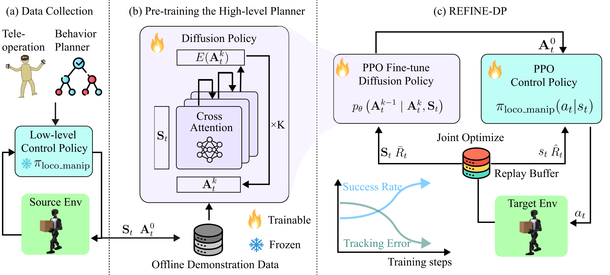
REFINE-DP Framework: The pipeline consists of three stages. (a) Data Collection: expert demonstrations are gathered via human teleoperation and heuristic behavior planners, executed through a frozen low-level RL loco-manipulation controller. (b) Pre-Training the High-level Planner: a diffusion policy with a transformer backbone is trained on the collected offline dataset to generate base velocity and hand pose commands. (c) REFINE-DP Fine-tuning: the pre-trained diffusion policy and the low-level RL controller are jointly optimized via PPO in simulation, maintaining distributional consistency between the planner and controller and substantially improving task success rates.
Three-Stage Pipeline
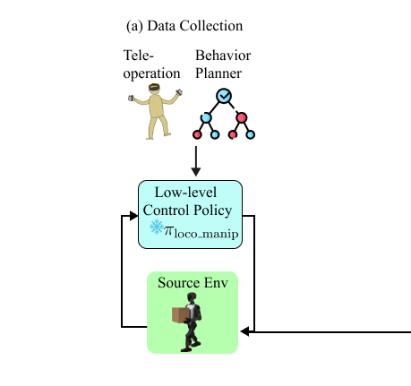
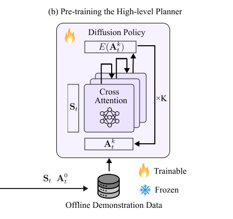
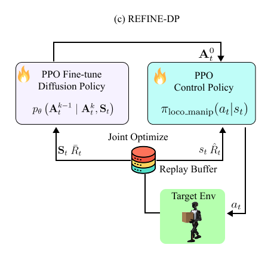
Low-level RL Loco-manipulation Controller
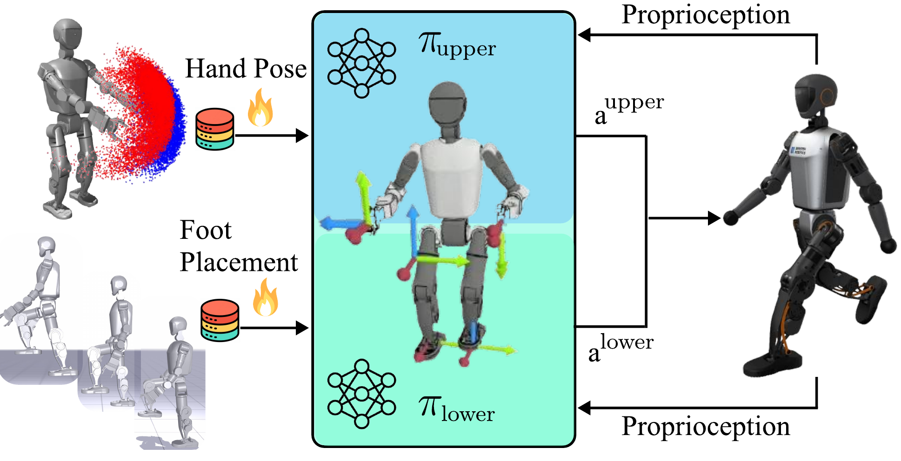
Hardware Demonstrations
We validate REFINE-DP on a Booster T1 humanoid robot (29 DoF) across four challenging loco-manipulation tasks requiring coordinated whole-body control.
Task 1: Walk and Pick Up a Box
 ×2
×2
 ×2
×2
Task 2: Walk, Pick Up an Object, and Walk to Place It
 ×2
×2
 ×2
×2
Task 3: Walk and Open a Door
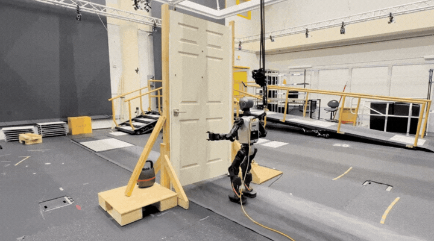
×2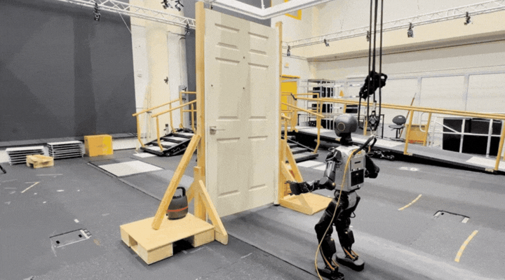
×2Task 4: Step Up and Retrieve an Object
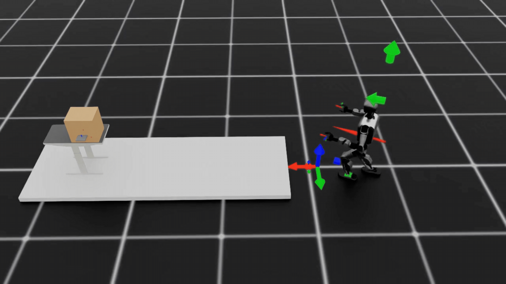
×2 ×2
×2
Teleoperation Demonstrations
Beyond autonomous execution, $\pi_{\text{loco-manip}}$ can serve as a teleoperation interface, allowing a human operator to command the robot in real time. A few example tasks are shown below.
 ×2
×2
 ×2
×2
 ×2
×2
 ×8
×8
Foot-placement Policy Demonstration
The low-level foot placement policy enables the humanoid to traverse uneven terrain by tracking commanded foothold positions, here demonstrated on a stair-climbing task.
AprilTag-based Demonstration
AprilTag markers supply accurate object pose estimates, showing that the framework remains robust across different pose-estimation backends.
Quantitative Results
Each method is evaluated over 100 trials per task in simulation. REFINE-DP (FT DiT Planner & Joint Optimization) consistently outperforms all baselines across every task.
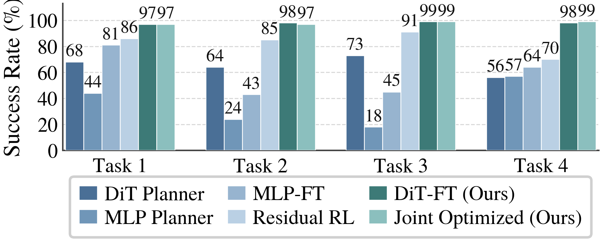
Joint Optimization Improves Fine-tuning Efficiency and Motion Quality
Optimizing the low-level controller yields two benefits: it alone boosts success rate by 18% on the long-horizon pick-and-place task, and jointly optimizing it halves the fine-tuning iterations needed (20 vs. 40) to reach 90% success.
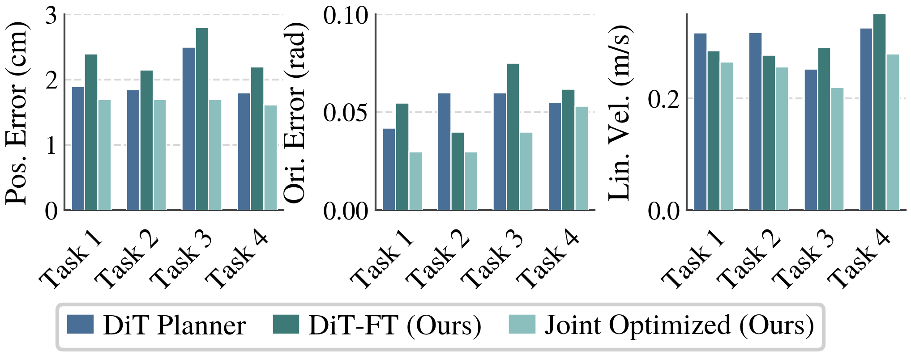
Tracking Performance and End-Effector Velocity Across Tasks (upper-body): Joint optimization achieves the lowest position error and cuts orientation error by up to 50% vs. the pre-trained policy, while reducing end-effector velocity by 15% on average, allowing the joint optimized WBC policy $\pi'_{\text{loco-manip}}$ to achieve smoother manipulation. Fine-tuning the diffusion policy alone can degrade tracking, showing that adapting the planner in isolation is insufficient; the policy instead adapts to poor tracking accuracy by over-commanding.
Data Efficiency: Scaling vs. Fine-tuning
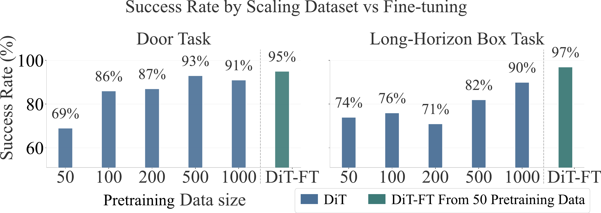
Data Efficiency: Training from scratch requires ~1000 trajectories to reach 90% success. A pre-trained diffusion policy fine-tuned with REFINE-DP achieves 95–97% success from just 50 demonstrations, a 20× reduction in data requirements.
Fine-tuning Over Pre-Trained Policies
Pre-trained Door Opening: 73%
Fine-tuned Door Opening: 95%
Fail and Successful Trials
 ×2
×2
 ×2
×2
 ×2
×2
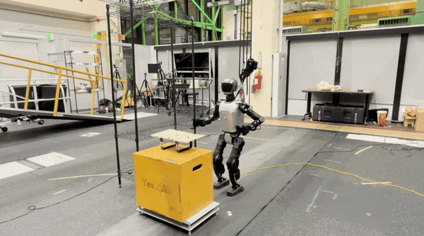
×2Increase in Task Throughput
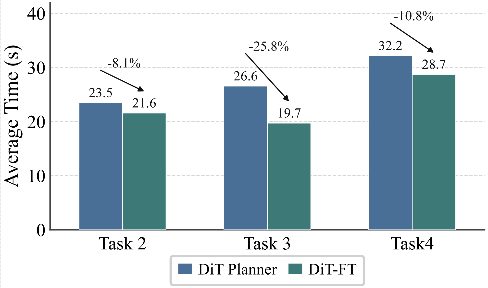
Fine-tuned policies learn action efficiency and eliminate the indecisive motions common in pre-trained policies, reducing average task completion time by up to 26% across tasks in simulation. In hardware experiments, fine-tuned policy achieve an average time reduction of around 10% and 20% for the box-transporting and door-opening task respectively.
 ×2
×2
 ×2
↑10%
×2
↑10%
 ×2
×2
 ×2
↑20%
×2
↑20%
Appendix
Observation Terms for RL Policy Training
| Observation | Actor | Critic |
|---|---|---|
| Manipulation | ||
| Projected gravity | ✓ | ✓ |
| Arm joint pos. | ✓ | ✓ |
| Arm joint vel. | ✓ | ✓ |
| Action | ✓ | ✓ |
| Hand pose cmd. ($\mathbf{p}_L^{\text{cmd}}, \mathbf{p}_R^{\text{cmd}}$) | ✓ | ✓ |
| Current hand poses ($\mathbf{p}_L, \mathbf{p}_R$) | ✓ | ✓ |
| Hand tracking error ($\mathbf{e}_L, \mathbf{e}_R$) | ✓ | ✓ |
| Locomotion | ||
| Foot placement cmd. | ✓ | ✓ |
| Base angular vel. | ✓ | ✓ |
| Projected gravity | ✓ | ✓ |
| Leg joint pos. | ✓ | ✓ |
| Leg joint vel. | ✓ | ✓ |
| Action | ✓ | ✓ |
| Reference foot pos. | ✓ | |
| Current foot pos. | ✓ | |
| Base linear vel. | ✓ | |
| Foot wrench | ✓ | |
Reward Terms for Foot Placement Tracking Policy
| Term | Formulation | Weight |
|---|---|---|
| End-Effector Reference Tracking (per foot) | ||
| Position ($\sigma=0.05$) | $\exp\!\left(-\frac{\lVert \mathbf{p}-\mathbf{p}^{\mathrm{ref}}\rVert^{2}}{\sigma^{2}}\right)$ | $+5.0$ |
| Yaw ($\sigma=0.1$) | $\exp\!\left(-\frac{(\psi-\psi^{\mathrm{ref}})^{2}}{\sigma^{2}}\right)$ | $+3.0$ |
| Base linear vel. ($\sigma=0.25$) | $\exp\!\left(-\frac{\lVert \mathbf{v}-\mathbf{v}^{\mathrm{ref}}\rVert^{2}}{\sigma^{2}}\right)$ | $+1.0$ |
| Joint Reference Tracking | ||
| Position ($\sigma=0.3$) | $\exp\!\left(-\frac{\lVert \mathbf{q}-\mathbf{q}^{\mathrm{ref}}\rVert^{2}}{\sigma^{2}}\right)$ | $+0.5$ |
| Velocity ($\sigma=1.0$) | $\exp\!\left(-\frac{\lVert \dot{\mathbf{q}}-\dot{\mathbf{q}}^{\mathrm{ref}}\rVert^{2}}{\sigma^{2}}\right)$ | $+0.3$ |
| Regularization (with curriculum) | ||
| Action smoothness | $\lVert \mathbf{a}_t-\mathbf{a}_{t-1}\rVert^{2}$ | $-0.001 \to -0.5$ |
| Joint acceleration | $\lVert \ddot{\mathbf{q}}\rVert^{2}$ | $-10^{-7} \to -10^{-5}$ |
| Torque limits | $\max\!\left(0,\,\lvert\boldsymbol{\tau}\rvert-\boldsymbol{\tau}_{\max}\right)$ | $-0.5$ |
| Joint limits | $\max\!\left(0,\,\lvert\mathbf{q}\rvert-\mathbf{q}_{\max}\right)$ | $-10^{-4}$ |
| Ankle posture | $\lVert \mathbf{q}-\mathbf{q}_{\mathrm{def}}\rVert^{2}$ | $-2.0$ |
| Base orientation ($\sigma=0.2$) | $\exp\!\left(-\frac{\lVert \mathbf{g}_{\mathrm{xy}}\rVert^{2}}{\sigma^{2}}\right)$ | $+3.0$ |
| Feet airtime ($\tau=0.4$) | $\sum_{i} c_i \bigl(t^{\mathrm{air}}_i-\tau\bigr)$ | $+20.0$ |
| Base height range | $\bigl[\max(0,h_{\min}-h)\bigr]^2+\bigl[\max(0,h-h_{\max})\bigr]^2$ | $-3.0$ |
Reward Terms for Hand Pose Tracking Policy
| Term | Formulation | Weight |
|---|---|---|
| End-Effector Position Tracking (per hand) | ||
| Coarse ($\sigma=0.4$) | $\exp(-\|\mathbf{p} - \mathbf{p}^{\text{cmd}}\|^2/\sigma^2)$ | $+2.0$ |
| Fine ($\sigma=0.1$) | $\exp(-\|\mathbf{p} - \mathbf{p}^{\text{cmd}}\|^2/\sigma^2)$ | $+2.0$ |
| Precise ($\sigma=0.08$) | $\exp(-\|\mathbf{p} - \mathbf{p}^{\text{cmd}}\|^2/\sigma^2)$ | $+2.0$ |
| End-Effector Orientation Tracking (per hand) | ||
| Coarse ($\sigma=0.8$) | $\exp(-\|\mathbf{e}_{\text{quat}}\|^2/\sigma^2)$ | $+1.0$ |
| Fine ($\sigma=0.5$) | $\exp(-\|\mathbf{e}_{\text{quat}}\|^2/\sigma^2)$ | $+1.0$ |
| Precise ($\sigma=0.3$) | $\exp(-\|\mathbf{e}_{\text{quat}}\|^2/\sigma^2)$ | $+1.0$ |
| Regularization (with curriculum) | ||
| Posture prior | $\|\mathbf{q} - \mathbf{q}_{\text{nom}}\|_1$ | $-0.2$ |
| Action smoothness | $\|\mathbf{a}_t - \mathbf{a}_{t-1}\|^2$ | $-0.01 \to -0.1$ |
| Joint velocity | $\|\dot{\mathbf{q}}\|^2$ | $-10^{-3} \to -2\times10^{-3}$ |
| Joint acceleration | $\|\ddot{\mathbf{q}}\|^2$ | $-10^{-6} \to -3\times10^{-6}$ |
| EE acceleration | $\|\ddot{\mathbf{p}}_{\text{ee}}\|^2$ | $-1.4\times10^{-2}$ |
| Torque limits | $\max(0, |\boldsymbol{\tau}| - \boldsymbol{\tau}_{\max})$ | $-0.1$ |
| Joint limits | $\max(0, |\mathbf{q}| - \mathbf{q}_{\max})$ | $-4.0$ |